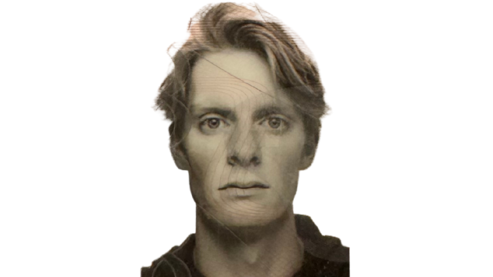

Hi, I’m Arvid, 20 years old and born and raised in Stockholm. Sports have always played a big role in my life, from winning a Swedish Basketball Championship to finishing a marathon in 3:09. Both experiences taught me the value of consistency, preparation, and learning from every attempt rather than chasing shortcuts.
Today I’m putting that same mindset into my studies in growth marketing at Berghs School of Communication. I’m fascinated by how creativity and data can work together to help ideas grow, and I enjoy exploring strategies that balance structure with experimentation. Whether it’s a marketing brief or a training plan, I like breaking challenges down into small, steady steps.
PS: Always up for a “what if…” conversation — and yeah, I’ll admit I’m quietly proud of my Berghs email: arvid.stenhag@student.berghs.se
All projects graded: Väl godkänt
Creative work for Fotografiska where we developed a concept for a pop-up experience. The focus was on storytelling, brand fit and creating a clear idea that could live both physically and digitally.
The process included concept development, messaging and visual direction built to feel premium, simple and easy to communicate in a real campaign context.
A campaign exploring how storytelling and product functionality can merge through digital growth tactics. We worked with content angles, distribution logic and how creative choices can support measurable outcomes.
The deliverable focused on building a clear narrative that could scale across channels while still staying true to the product’s core value.
An e-commerce project where we created drink-testing sticks designed to help create a safer environment in nightclubs. The goal was to build a concept that improves safety without amplifying fear, and that can be communicated in a clear, consumer-friendly way.
We worked with positioning, messaging and a conversion mindset: what needs to be communicated for trust, how to reduce friction, and how to make the product feel simple to use in real nightlife situations.
A CRM assignment for Stadium where we developed a concept tailored to Stadium’s 5,000,000 members. The goal was to move beyond bonus and discounts and instead build loyalty through relevance, behavior and long-term value.
The solution focused on how data (purchase + behavior) can trigger communication based on real needs in the training journey, not assumptions at the point of purchase.
In this project we worked with conversion optimization for Under Your Skin. The focus was on restructuring the website to create clearer user flows, stronger value propositions and more conversion-driven design decisions.
We analyzed user journeys, CTA placement, hierarchy and friction points. The outcome was a more structured experience designed to increase engagement and purchase intent.
We’re competing in Young Lions for Best Design with a concept created for Stadium. The idea is to collect leftover food from sports events and transform it into beer.
The project connects sustainability, circular economy and brand storytelling. By turning waste into a celebratory product, we position sustainability as something emotional and community-driven rather than restrictive.
Conversion-driven landing pages and real projects outside school.
Side project where I built conversion-focused landing pages using Lovable. The focus was on clarity, hierarchy and removing friction: tight structure, strong CTA’s and short paths to action.
The goal was to create a simple UX that instantly communicates value, with a design that feels premium and modern.
Side project where I improved Korvbyrån’s website and structure using Lovable. The work focused on simplifying the flow, making it easier to understand the offering, and improving conversion paths.
I also worked with structure and UX decisions that make it easier for visitors to take action quickly (especially for catering).
Tools I use to build, measure and optimize.
Google Tag Manager (GTM) – Event tracking, dataLayer logic and conversion setup.
Google Analytics 4 (GA4) – Funnel analysis, event tracking, conversion insights.
Looker Studio – Dashboards, reporting and visualizing performance.
Lucky Orange – Heatmaps, session recordings and user behavior insights.
Meta Ads – Campaign setup, audiences, creatives and optimization.
Google Ads – Search campaigns, keywords, intent-based acquisition.
Shopify – Product pages, checkout flows and conversion structure.
Email/CRM tooling – Basic segmentation thinking, triggers and lifecycle structure.
Adobe Photoshop – Image editing, mockups and campaign visuals.
Adobe Illustrator – Vector graphics, layout and branding elements.
Canva – Presentations, concept decks and fast iteration.
VS Code – Frontend structure, HTML/CSS/JS.
GitHub – Version control and portfolio hosting.
Lovable – Conversion-driven landing pages and rapid prototyping.